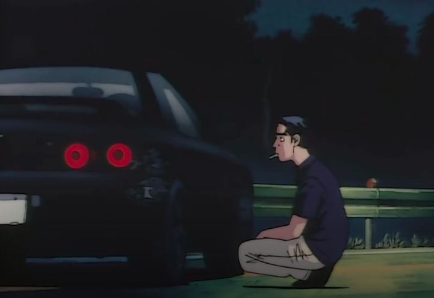

You hold your line, Takeshi thinks you're going to go for a move up the inside so he tries to squeeze you into the corner, but you turn off your headlights and quickly move to the outside. You move so quick Takeshi doesn't have enough time to react and he hits the front of his car on the curb then he spins out but is able to control his car, he hits the guardrail while spinning but manages to come to a stop. You drive to the bottom of the mountain greeted by the finish line.
YOU WIN!

Drive home -